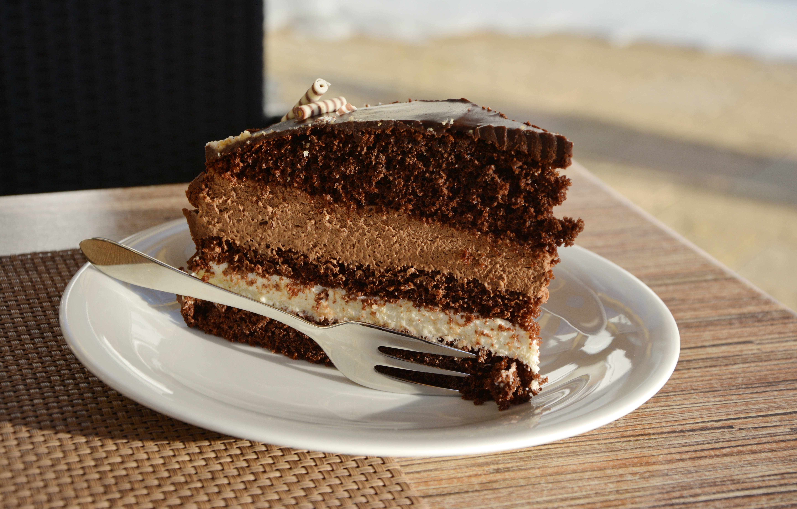

BOLO DE CHOCOLATE!
| Informações | ||
|---|---|---|
| dificuldade | fatias | tempo |
| fácil | 8 fatias | 60 minutos |

ingredientes
- 1 xícara de açúcar
- 1 xícara e 1/2 (chá) de açucar
- 2 xícaras de farinha de trigo
- 1 xícara de chocolate em pó
- 1 colher de sopa de fermento em pó
- 1/2 xícara de manteiga derretida
- 1 xícara de leite quente
- 3 ovos
- 1 colher de chá de essência de baunilha
- 1 pitada de sal
Modo de preparo
- bata no liquidificador os ovos com o açúcar,óleo, achocolatado e farinha de trigo, coloque a farinha aos poucos.
- despeje a massa em uma tijela e adicione a água quente, o sal e o fermento, misture bem.
- despeje a massa em uma forma untada e enfarinhada.
- leve ao forno por aproximadamente 35-40 minutos ou até que um palito inserido no centro do bolo saia limpo.
- retire do forno e deixe esfriar antes de desenformar.